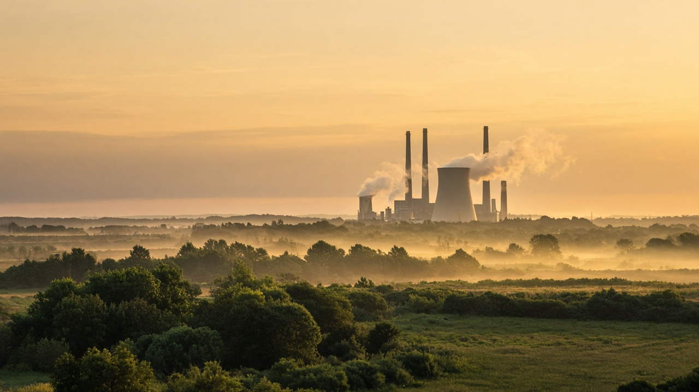
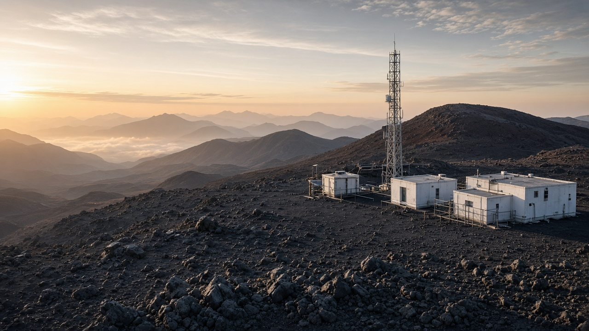

Greenhouse Gases and Radiative Forcing
Published on August 20, 2026

Greenhouse gases trap outgoing longwave infrared radiation emitted by the Earth's surface, creating a natural effect that keeps the planet habitable. Human activities have elevated concentrations of carbon dioxide, methane, nitrous oxide, and fluorinated compounds far above pre-industrial levels through fossil fuel combustion, deforestation, agriculture, and industrial processes. Radiative forcing quantifies the change in energy balance at the top of the atmosphere caused by these gases, measured in watts per square meter relative to a baseline period. Positive forcing warms the climate system, while negative forcing from aerosols and land-use changes can partially offset warming in certain regions and seasons.
Each greenhouse gas differs in atmospheric lifetime, absorption spectrum, and global warming potential. Carbon dioxide persists for centuries to millennia, making cumulative emissions the dominant driver of long-term warming. Methane has a shorter atmospheric lifetime but absorbs radiation efficiently, contributing disproportionately to near-term warming; its sources include livestock, rice paddies, landfills, and fugitive emissions from oil and gas infrastructure. Nitrous oxide arises mainly from agricultural soils and industrial chemical production, while hydrofluorocarbons and perfluorocarbons used in refrigeration and electronics carry very high warming potentials per molecule despite low atmospheric concentrations.
Scientists use radiative transfer models, ice core records, and satellite observations to reconstruct historical forcing and project future climate responses under different emission scenarios. The Intergovernmental Panel on Climate Change synthesizes this evidence to inform international negotiations and national mitigation pledges. Reducing GHG emissions requires transforming energy systems toward renewables, improving energy efficiency, protecting carbon sinks in forests and wetlands, and adopting low-emission agricultural practices. Monitoring networks such as the Mauna Loa Observatory track CO2 trends, while national inventories report sectoral emissions to verify progress toward net-zero targets and equitable climate resilience.

ग्रीनहाउस ग्याँसले पृथ्वी सतहबाट निस्कने लामो तरंग अवरक्त विकिरणलाई रोक्छ, जसले ग्रहलाई बस्न योग्य राख्ने प्राकृतिक प्रभाव सिर्जना गर्छ। मानवीय गतिविधिले जीवाश्म इन्धन दहन, वन विनाश, कृषि र औद्योगिक प्रक्रियाबाट कार्बन डाइअक्साइड, मिथेन, नाइट्रस ऑक्साइड र फ्लोरिनयुक्त यौगिकको सान्द्रता पूर्व-औद्योगिक स्तरभन्दा धेरै बढाएको छ। विकिरण बलले वातावरणको माथिल्लो सतहमा यी ग्याँसले ऊर्जा सन्तुलनमा ल्याएको परिवर्तन वाट प्रति वर्ग मिटरमा माप्छ। सकारात्मक विकिरण बलले जलवायु प्रणालीलाई तताउँछ, जबकि एरोसोल र भू-उपयोग परिवर्तनबाट ऋणात्मक विकिरण बलले केही क्षेत्र र मौसममा तताउने प्रभाव आंशिक रूपमा कम गर्छ।
प्रत्येक GHG को वातावरणमा बस्ने अवधि, विकिरण अवशोषण दायरा र विश्वव्यापी तापन क्षमता फरक हुन्छ। CO2 सयौं देखि हजारौं वर्षसम्म रहन्छ, जसले संचयी उत्सर्जनलाई दीर्घकालीन तापनको मुख्य कारक बनाउँछ। मिथेनको अवधि छोटो छ तर विकिरण कुशलतापूर्वक अवशोषण गर्छ; स्रोतमा पशुपालन, धान खेत, फोहोर फाल्ने स्थल र तेल-ग्याँस पूर्वाधारबाट भाग्ने उत्सर्जन समावेश छ। नाइट्रस ऑक्साइड मुख्यतः कृषि माटो र औद्योगिक रसायन उत्पादनबाट आउँछ, जबकि शीतक र विद्युत उपकरणमा प्रयोग हुने हाइड्रोफ्लोरोकार्बन र पेरफ्लोरोकार्बनको प्रति अणु तापन क्षमता धेरै उच्च हुन्छ।
वैज्ञानिकहरूले विकिरण स्थानान्तरण मोडेल, हिम कोर अभिलेख र उपग्रह अवलोकन प्रयोग गरी ऐतिहासिक विकिरण बल पुनर्निर्माण र भविष्यका उत्सर्जन परिदृश्य अन्तर्गत जलवायु प्रतिक्रियाको पूर्वानुमान गर्छन्। अन्तरसरकारी समितिले प्रमाण संश्लेषण गरी अन्तर्राष्ट्रिय वार्ता र राष्ट्रिय न्यूनीकरण प्रतिबद्धतालाई सूचित गर्छ। GHG उत्सर्जन घटाउन नवीकरणीय ऊर्जा, ऊर्जा दक्षता, वन र दलदलीय क्षेत्रमा कार्बन भण्डार संरक्षण र कम-उत्सर्जन कृषि अपनाउनुपर्छ। मौना लोआ वेधशाला जस्ता सञ्जालले CO2 प्रवृत्ति अनुगमन गर्छ, राष्ट्रिय सूचीले क्षेत्रगत उत्सर्जन रिपोर्ट गरी शुद्ध-शून्य लक्ष्य प्रगति पुष्टि गर्छ।
ग्रीनहाउस गैसें पृथ्वी सतह से निकलने लंबी तरंग अवरक्त विकिरण को फँसाती हैं, जो ग्रह को रहने योग्य बनाता है। मानव गतिविधियों ने जीवाश्म ईंधन दहन, वन विनाश, कृषि और औद्योगिक प्रक्रियाओं से CO2, मीथेन, नाइट्रस ऑक्साइड और फ्लोरिनयुक्त यौगिकों की सांद्रता बढ़ाई है। विकिरण बल वायुमंडल के ऊपरी स्तर पर ऊर्जा संतुलन में परिवर्तन को वाट प्रति वर्ग मीटर में मापता है। सकारात्मक विकिरण बल जलवायु को गर्म करती है, जबकि एरोसोल और भूमि उपयोग परिवर्तन से ऋणात्मक विकिरण बल कुछ क्षेत्रों में गर्मी को आंशिक रूप से कम करती है।
प्रत्येक GHG की वायुमंडलीय अवधि, विकिरण अवशोषण दायरा और विश्वव्यापी तापन क्षमता अलग होती है। CO2 सदियों से सहस्राब्दियों तक रहता है, जिससे संचयी उत्सर्जन दीर्घकालीन तापन का मुख्य कारक है। मीथेन की अवधि छोटी है पर विकिरण कुशलता से अवशोषित करती है; स्रोतों में पशुपालन, धान की खेती, कचरा डालने का स्थल और तेल-गैस बुनियादी ढांचा शामिल हैं। नाइट्रस ऑक्साइड मुख्यतः कृषि मिट्टी और औद्योगिक रसायन उत्पादन से आता है, जबकि शीतक और विद्युत उपकरणों में प्रयुक्त हाइड्रोफ्लोरोकार्बन और पेरफ्लोरोकार्बन की प्रति अणु तापन क्षमता बहुत अधिक है।
वैज्ञानिक विकिरण स्थानांतरण मॉडल, हिम कोर अभिलेख और उपग्रह अवलोकन से ऐतिहासिक विकिरण बल का पुनर्निर्माण और भविष्य के उत्सर्जन परिदृश्य के तहत जलवायु प्रतिक्रिया का पूर्वानुमान करते हैं। अंतरसरकारी समिति प्रमाण का संश्लेषण कर अंतर्राष्ट्रीय वार्ता और राष्ट्रीय न्यूनीकरण प्रतिबद्धता को सूचित करती है। GHG उत्सर्जन घटाने के लिए नवीकरणीय ऊर्जा, ऊर्जा दक्षता, वन और दलदलीय क्षेत्र में कार्बन भंडार संरक्षण और कम-उत्सर्जन कृषि अपनानी होगी। मौना लोआ वेधशाला जैसे सञ्जाल CO2 प्रवृत्ति का अनुगमन करते हैं, राष्ट्रीय सूची क्षेत्रगत उत्सर्जन रिपोर्ट कर शुद्ध-शून्य लक्ष्य की प्रगति पुष्टि करती है।